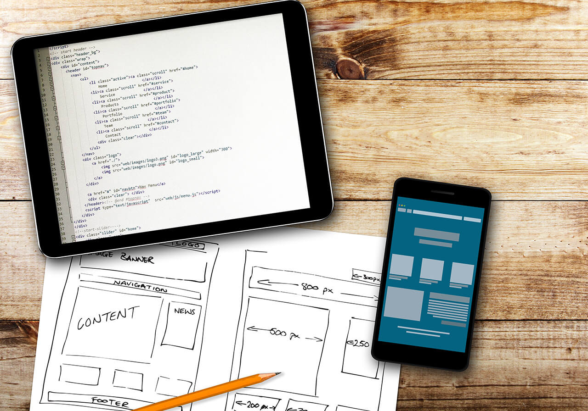
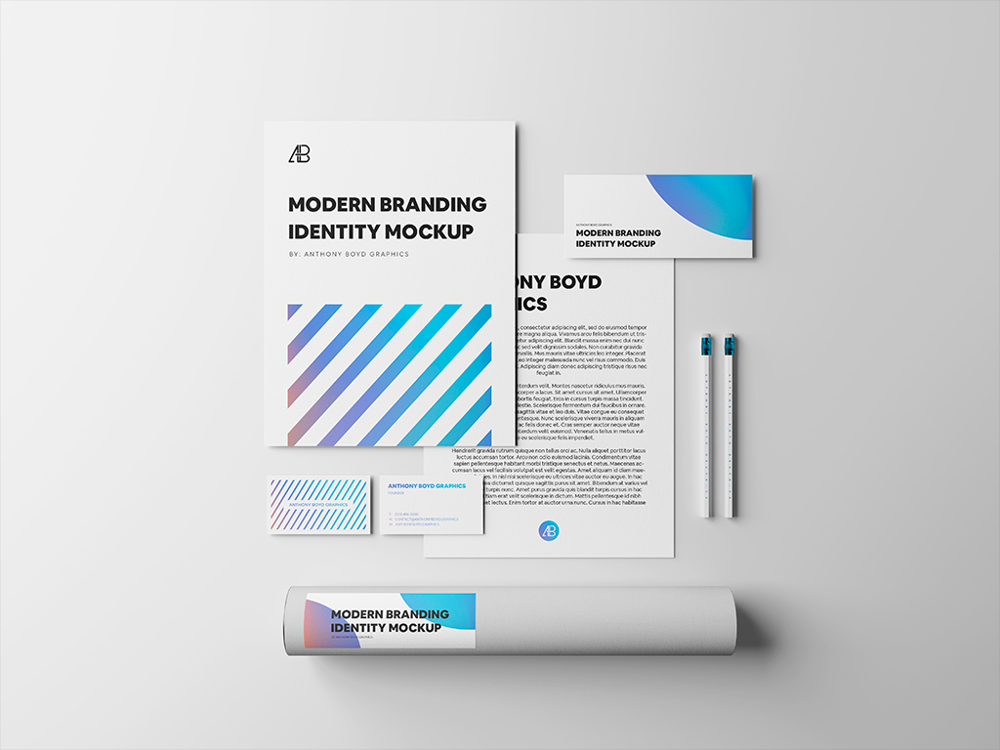

El diseño web es una actividad que consiste en la planificación, diseño, implementación y mantenimiento
de sitios web. No es simplemente la implementación del diseño convencional ya que se abarcan diferentes
aspectos como el diseño gráfico web, diseño de interfaz y experiencia de usuario, como la navegabilidad,
interactividad, usabilidad, arquitectura de la información; interacción de medios, entre los que podemos
mencionar audio, texto, imagen, enlaces, video y la optimización de motores de búsqueda. A menudo muchas
personas trabajan en equipos que cubren los diferentes aspectos del proceso de diseño, aunque existen
algunos diseñadores independientes que trabajan solos.

Imagen 3.1. Diseño web. Tomado de https://www.latevaweb.com/7-pasos-para-el-desarrollo-de-un-diseno-web.
La unión de un buen diseño con una jerarquía bien elaborada de contenidos, aumenta la eficiencia de la web
como canal de comunicación e intercambio de datos, que brinda posibilidades como el contacto directo entre
el productor y el consumidor de contenidos.
Mockup's
Los Mock Ups son fotomontajes que permiten a los diseñadores gráficos y web mostrar al cliente cómo quedaran sus diseños.
Tanto si es un logotipo, como una tarjeta de visita, un folleto o una página web, existen mock up’s para todos los gustos y colores.
Además, permiten ahorrar en gastos de impresión y de montajes ya que, gracias a estas maquetas, podemos enseñar a nuestros clientes una idea más aproximada de cómo se vería su diseño en diferentes formatos: papel, páginas web, papelería, rótulos, vinilos, carteles con resultados muy realistas y bastante aproximados a la realidad.

Imagen 3.2. Mockup. Tomado de https://www.mockupworld.co/free/tag/dark/.